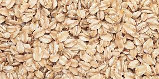
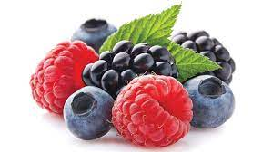
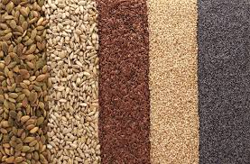
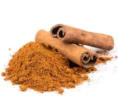
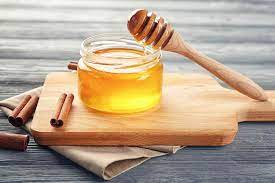

| Oats |
Oats are a great source of fiber, which can lower your cholesterol. Lower cholestorol can reduce risk of artery disease, certain cancers, and help regulate blood pressure. Additionally, essential minerals are found in oats, such as potassium, zinc, iron, and more. |

Image by Dimitris66 at Getty Images, CC BY-NC-ND. Information by Joseph Nordqvist at https://www.medicalnewstoday.com/articles/270680 |
|---|
| Peanut Butter |
Peanut butter is an excellent source of healthy fats and protien. |

Image and Information by Lindsay Ostrom at https://pinchofyum.com/5-minute-homemade-peanut-butter, CC BY-NC-ND. |
|---|
| Fruit |
Many fruits, especially berries, are superfoods. Most berries provide ample amounts of vitamin C, antioxidants, and anti-inflammatories. These properties can reduce the risk of various types of cancer and prevent chronic diseaes. Blueberries are specifically great for the nervous system and long term brain health. |

Image and Information by Nick Rose at https://www.pccmarkets.com/sound-consumer/2018-06/nutrition-picks-northwest-berries-prolific-protectors/, CC BY-NC-ND. |
|---|
| Nuts and Seeds |
Chia seeds, pumpkin seeds (pepitas), hemp, flax, cashews, and almonds are just a few toppings that are great to add to a bowl of oats. Most seeds and nuts are high in protein and can help keep you full throughout the day. Additionally, these kinds of toppings are great souces of omega-3 and omega-6 fatty acids. Such fatty acids can prevent chronic inflamation, which is linked to many diseases. Mmega-3 and 6 acids are also known as a protector against the United States' no. 1 killer, heart disease. |

Image by Thomas Del Brase at Getty Images, CC BY-NC-ND. Information by https://www.eufic.org/en/whats-in-food/article/the-importance-of-omega-3-and-omega-6-fatty-acids and Anita Hamilton at https://time.com/2946028/seeds-chia-hemp-flax-sesame-pumpkin-nigella/ |
|---|
| Cinnamon |
Cinnamon is anti-viral, bacterial, and fungal, making it a good tool in preventing illness. Cinnamon also contains antioxidants and anti-inflammatories, which further protect consumers from disease. Cinnamon is a prebiotic (meaning it wards off bad bacteria while allowing the growth of good bacteria) and can aid in digestive issues. |

Image and information: by Jo Lewin at https://www.bbcgoodfood.com/howto/guide/health-benefits-cinnamon, CC BY-NC-ND. |
|---|
| Honey |
Eating local honey is very good for your immune system. Trace amounts of pollen and other typical irritants are in honey at tolerable levels. Introduing such irritants to your body can help alliviate allergy symptoms in the future. Honey is also known to sooth sore throats and coughs. |

Image by belchonock at Getty Images, CC BY-NC-ND. Information by Kristina Duda at https://www.verywellhealth.com/can-cinnamon-and-honey-cure-the-flu-770623 |
|---|